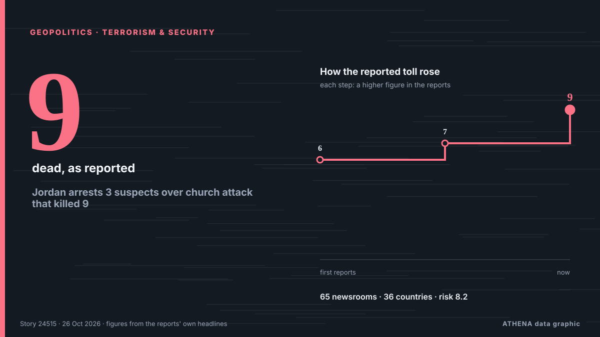

الجغرافيا السياسية
المخاطر الجيوسياسية اليوم
آخر 24 ساعة — الأحداث: 211، الدول: 82. أعلى خطر الآن: 6.9 — Trump on Iran war: It’s going to get wrapped up soon.

الجغرافيا السياسيةJordan arrests 3 suspects over church attack that killed 9
Sources said two gunmen opened fire for at least seven minutes in a church in Karak area. من Express Tribune
| 18 أكتوبر | 10 |
|---|---|
| 19 أكتوبر | 24 |
| 20 أكتوبر | 22 |
| 21 أكتوبر | 36 |
| 22 أكتوبر | 73 |
| 23 أكتوبر | 84 |
| 24 أكتوبر | 56 |
| 25 أكتوبر | 93 |
| 26 أكتوبر | 150 |
| 27 أكتوبر | 138 |
| 28 أكتوبر | 101 |
| 29 أكتوبر | 75 |
| 30 أكتوبر | 74 |
| 31 أكتوبر | 0 |
المتابعات
الأحدث
Melania Trump Brokers Russia-Ukraine Ceasefire in Oleshky
Residents of the Russian-occupied Ukrainian town have reported a worsening food crisis since 2022. من Express Tribune
The facts about Brazil's president Lula da Silva
On October 19, Brazil’s Superior Electoral Court gave U.S. tech giant Meta 24 hours to prove it is treating the Brazilian presidential candidates equally, following allegations from President Luiz… من Latin America Reports
Trump administration illegally fired James Comey's daughter, judge rules
Maurene Comey believes she was let go from her job as a federal prosecutor because her father is the former FBI director. من BBC News
US To Grant Flavio Bolsonaro Visas After Brazil Election Loss
Brother Eduardo welcomes him in Miami, Brazilian media reports, as US confirms visas for Bolsonaro and his family. من Anadolu Agency (English)
Lula declares victory in Brazil's presidential runoff; Flavio Bolsonaro refuses to concede
Defying opinion poll projections showing Lula in the lead, right-wing senator Flávio Bolsonaro takes lead over incumbent into second-round run-off. من Buenos Aires Times
Israeli press review: Israel to lockdown West Bank as Netanyahu orders Hebron siege
The IDF is besieging Hebron and several villages in the area as it raids the Palestinian assailants' homes. من Haaretz (English)
Israel to close all West Bank land crossings on election day
Israel announced it would be closing all land crossings with the West Bank on the day of next week's parliamentary elections. من France 24 English
Two men charged in UK with helping Iran over RAF Fairford incident
British prosecutors said on Tuesday they had charged two men under the National Security Act over an incident last month at the RAF Fairford airbase, with police saying the two were suspected of… من Cyprus Mail
What Maria Corina Machado’s return to Venezuela means for its democratic transition
CARACAS, Oct 23 - The Venezuelan opposition movement headed by Nobel Peace Prize laureate Maria Corina Machado is preparing for eventual elections, including a new effort to boost voter registration… من The Straits Times
US approves potential $2.1B sale of 500 Patriot missiles to Ukraine
The U.S. Department of State has approved the potential sale to Ukraine of 500 PAC-3 MSE missiles for Patriot air defense systems, valued at a total of $2.1 billion. من Ukrinform (English)
Bolsonaro’s claim to be Brazil’s leader not backed by Trump
The Trump administration does not plan to back Flavio Bolsonaro’s claim to be Brazil’s rightful leader, despite helping the defeated candidate reach the US after years of supporting him and his… من Cyprus Mail
EU diplomats object to G20 photo with Lavrov, prompting US cancellation
The meeting in Atlanta will go ahead as planned, ahead of a G20 leaders’ summit hosted by President Donald Trump at his Miami golf club in December. من Euronews English